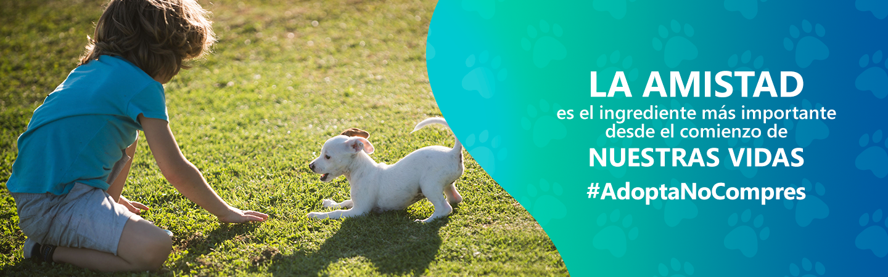
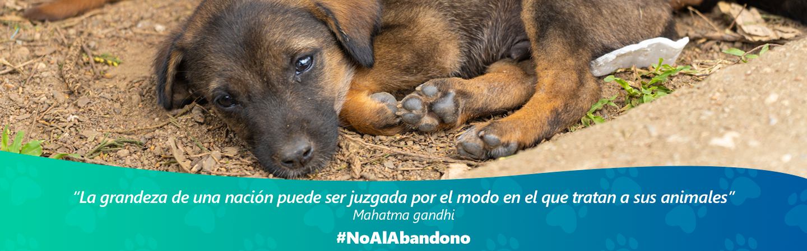

Fundacion 4 patitas es una organizacion sin fines de lucro que se mantiene solo de recursos propios, de colaboradores, voluntarios y amigos. nuestra labor en rescatar animales en situación de riesgo y peligro, los mas desvalidos de los abandonados. Para ello, los asistimos médicamente los esterilizamos y rehabilitamos para luego, idealmente, incorporarlos de manera definitiva a familias responsables. Conjuntamente,damos la oportunidad de tener un final de vida digno, con todos los cuidados, a perros ancianos terminales abandonados. Promovemos la tenencia responsable de mascotas, apoyando y orientando a la personas para que mejoren su calidad de vida y la de sus animales. Nuestra mision es Rescatar animales en situación de riesgo y abandono, esterilizarlos, rehabilitarlos e incorporarlos a familias definitivas. Dar la oportunidad de tener un final digno a perros ancianos terminales abandonados en un hogar de acogida con todos los cuidados requeridos según su condición.